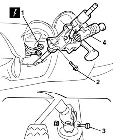

4110A31 Steering control shaft SUPPORT - R.R. for versions with Air Bag
- Path
- Procedures > 41 STEERING > 4110 STEERING CONTROL AND LINKAGE > 4110A steering control > 4110A31 Steering control shaft SUPPORT - R.R. for versions with Air Bag
- Kind
- repair procedure (removal / refitting; the operation number is the code)
- Applies to
- all engines; all production periods
- Interactive page
- https://sloeber94.github.io/elrnDB-fMltpl/en/#/2891676
Applies to: all engines; all production periods
 Removing
Removing
 Refitting
Refitting4110A11 steering wheel - r+r for replacement or check for versions with air bag
7040A26 steering column trim - r+r
5550A12 complete stalk unit - r+r for versions with air bag
1. Disconnect the electrical connections for the ignition switch.
 | Name | Connector |
|---|---|---|
1 | Ignition switch |
2. Undo the bolts fixing the support to the bodyshell.
3. Undo the bolt fixing the support to the steering box.
4. Remove the support with steering shafts.

Applies to: all engines; all production periods
Refitting
RemovingFit the steering shaft coupling on the steering box pinion.
Tighten the fixing bolt to the recommended torque.
 | Fastening | Component | Ø | Value (daNm) |
|---|---|---|---|---|
- | Bolt | STEERING SHAFT JOINT FASTENERS | M8 | 2.5 |
Tighten the bolts fixing the support to the bodyshell to the recommended torque.
| Fastening | Component | Ø | Value (daNm) |
|---|---|---|---|---|
- | Bolt | STEERING SHAFT MOUNTING | M8 | 2.2 |
Connect the electrical connections for the ignition switch.
5550A12 complete stalk unit - r+r for versions with air bag
7040A26 steering column trim - r+r
4110A11 steering wheel - r+r for replacement or check for versions with air bag
Topics linked from this page (5)
- 4110A11 steering wheel - r+r for replacement or check for versions with air bag
- 5550A12 complete stalk unit - r+r for versions with air bag
- 5580C18 AIR BAG MODULE - R+R
- 7040A26 steering column trim - r+r
- H1 Ignition switch